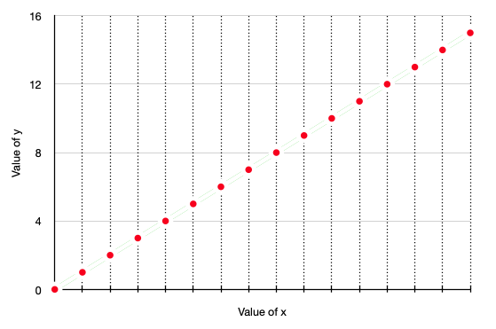
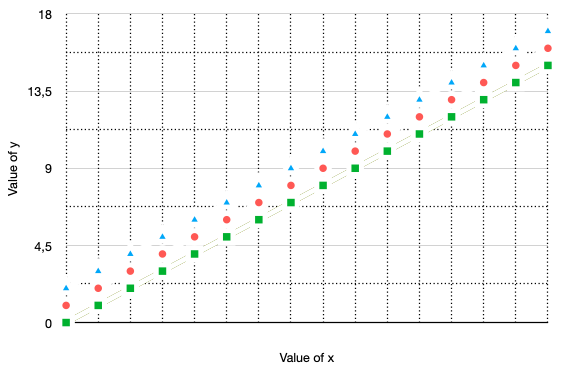
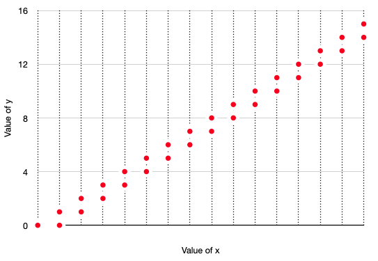

Control Flow and Non-determinism in TLA+
Author: Igor Konnov
Peer review: Shon Feder, Jure Kukovec
Non-determinism is one of the TLA+ features that makes it different from
mainstream programming languages. However, it is very easy to overlook it: There is no
special syntax for expressing non-determinism. In pure TLA+, whether your
specification is deterministic or not depends on the evaluation of the initial
predicate and of the transition predicate. These are usually called Init and
Next, respectively. In the following, we first intuitively explain what non-determinism
means in the mathematical framework of TLA+, and then proceed with the
explanation that is friendly to computers and software engineers.
Explaining non-determinism to humans
States, transitions, actions, computations. Every TLA+ specification comes
with a set of state variables. For instance, the following specification
declares two state variables x and y:
-------- MODULE coord ----------
VARIABLES x, y
Init == x = 0 /\ y = 0
Next == x' = x + 1 /\ y' = y + 1
================================
A state is a mapping from state variables to TLA+ values. We do not go into the mathematical depths of precisely defining TLA+ values. Due to the background theory of ZFC, this set is well-defined and is not subject to logical paradoxes. Basically, the values are Booleans, integers, strings, sets, functions, etc.
In the above example, the operator Init evaluates to TRUE on exactly one
state, which we can conveniently write using the record
constructor as follows: [x |-> 0, y |-> 0].
The operator Next contains primes (') and thus represents pairs of states,
which we call transitions. An operator over unprimed and primed variables
is called an action in TLA+. Intuitively, the operator Next in our example
evaluates to TRUE on infinitely many pairs of states. For instance, Next
evaluates to TRUE on the following pairs:
<<[x |-> 0, y |-> 0], [x |-> 1, y |-> 1]>>
<<[x |-> 1, y |-> 1], [x |-> 2, y |-> 2]>>
<<[x |-> 2, y |-> 2], [x |-> 3, y |-> 3]>>
...
In our example, the second state of every transition matches the first state of the next transition in the list. This is because the above sequence of transitions describes the following sequence of states:
[x |-> 0, y |-> 0]
[x |-> 1, y |-> 1]
[x |-> 2, y |-> 2]
[x |-> 3, y |-> 3]
...
Actually, we have just written a computation of our specification.
A finite computation is a finite sequence of states s_0, s_1, ..., s_k
that satisfies the following properties:
- The operator
Initevaluates toTRUEon states_0, and - The operator
Nextevaluates toTRUEon every pair of states<<s_i, s_j>>for0 <= i < kandj = i + 1.
We can also define an infinite computation by considering an infinite
sequence of states that are connected via Init and Next as above, but
without stopping at any index k.
Below we plot the values of x and y in the first 16 states with red dots.
Not surprisingly, we just get a line.

Note: In the above examples, we only showed transitions that could be
produced by computations, which (by our definition) originate from the initial
states. These transitions contain reachable states. In principle, Next may
also describe transitions that contain unreachable states. For instance, the
operator Next from our example evaluates to TRUE on the following pairs as
well:
<<[x |-> -100, y |-> -100], [x |-> -99, y |-> -99]>>
<<[x |-> -100, y |-> 100], [x |-> -99, y |-> 101]>>
<<[x |-> 100, y |-> -100], [x |-> 101, y |-> -99]>>
...
There is no reason to restrict transitions only to the reachable states (and it would be hard to do, technically). This feature is often used to reason about inductive invariants.
Determinism and non-determinism. Our specification is quite boring: It describes exactly one initial state, and there is no variation in computing the next states. We can make it a bit more interesting:
------------ MODULE coord2 ---------------
VARIABLES x, y
Init == x = 0 /\ (y = 0 \/ y = 1 \/ y = 2)
Next == x' = x + 1 /\ y' = y + 1
==========================================
Now our plot has a bit more variation. It presents three computations
that are starting in three different initial states: [x |-> 0, y |-> 0],
[x |-> 0, y |-> 1], and [x |-> 0, y |-> 2].

However, there is still not much variation in Next. For every state s,
we can precisely say which state follows s according to Next. We can
define Next as follows (note that Init is defined as in coord):
------------ MODULE coord3 -----------------
VARIABLES x, y
Init == x = 0 /\ y = 0
Next == x' = x + 1 /\ (y' = x \/ y' = x + 1)
============================================
The following plot shows the states that are visited by the computations
of the specification coord3:

Notice that specification coord describes one infinite computation (and
infinitely many finite computations that are prefixes of the infinite
computation). Specification coord2 describes three infinite computations.
Specification coord3 describes infinitely many infinite computations: At
every step, Next may choose between y' = x or y' = x + 1.
Why are these specifications so different? The answer lies in non-determinism.
Specification coord is completely deterministic: There is just one state that
evaluates Init to TRUE, and every state is the first component of exactly
one transition, as specified by Next. Specification coord2 has
non-determinism in the operator Init. Specification coord3 has
non-determinism in the operator Next.
Discussion. So far we have been talking about the intuition. If you would like to know more about the logic behind TLA+ and the semantics of TLA+, check Chapter 16 of Specifying Systems and The Specification Language TLA+.
When we look at the operators like Init and Next in our examples, we can
guess the states and transitions. If we could ask our logician friend to guess
the states and transitions for us every time we read a TLA+ specification, that
would be great. But this approach does not scale well.
Can we explain non-determinism to a computer? It turns out that we can. In fact, many model checkers support non-determinism in their input languages. For instance, see Boogie and Spin. Of course, this comes with constraints on the structure of the specifications. After all, people are much better at solving certain logical puzzles than computers, though people get bored much faster than computers.
To understand how TLC enumerates states, check Chapter 14 of Specifying Systems. In the rest of this document, we focus on the treatment of non-determinism that is close to the approach in Apalache.
Explaining non-determinism to computers
To see how a program could evaluate a TLA+ expression, we need two more ingredients: bindings and oracles.
Bindings. We generalize states to bindings: Given a set of names N, a
binding maps every name from N to a value. When N is the set of all
state variables, a binding describes a state. However, a binding does not have
to assign values to all state variables. Moreover, a binding may assign values
to names that are not the names of state variables. In the following, we are
using bindings over subsets of names that contain: (1) names of the state
variables, and (2) names of the primed state variables.
To graphically distinguish bindings from states, we use parentheses and arrows
to define bindings. For instance, (x -> 1, x' -> 3) is a binding that maps
x to 1 and x' to 3. (This is our notation, not a common TLA+ notation.)
Evaluating deterministic expressions. Consider the specification coord,
which was given above. By starting with the empty binding (), we can see how
to automatically evaluate the body of the operator Init:
x = 0 /\ y = 0
By following semantics of conjunction, we see that /\ is
evaluated from left-to-right. The left-hand side equality x = 0 is treated as
an assignment to x, since x is not assigned a value in the empty binding
(), which it is evaluated against. Hence, the expression x = 0 produces
the binding (x -> 0). When applied to this binding, the right-hand side
equality y = 0 is also treated as an assignment to y. Hence, the expression
y = 0 results in the binding (x -> 0, y -> 0). This binding is defined over
all state variables, so it gives us the only initial state [x |-> 0, y |-> 0].
Let’s see how to evaluate the body of the operator Next:
x' = x + 1 /\ y' = y + 1
As we have seen, Next describes pairs of states. Thus, we will produce
bindings over non-primed and primed variables, that is, over x, x', y, y'.
Non-primed variables represent the state before a transition fires, whereas
primed variables represent the state after the transition has been fired.
Consider evaluation of Next in the state [x |-> 3, y |-> 3], that is, the
evaluation starts with the binding (x -> 3, y -> 3). Similar to the
conjunction in Init, the conjunction in Next first produces the binding (x -> 3, y -> 3, x' -> 4) and then the binding (x -> 3, y -> 3, x' -> 4, y' -> 4). Moreover, Next evaluates to TRUE when it is evaluated against the
binding (x -> 3, y -> 3). Hence, the state [x |-> 3, y |-> 3] has the only
successor [x |-> 4, y |-> 4], when following the transition predicate Next.
In contrast, if we evaluate Next when starting with the binding (x -> 3, y -> 3, x' -> 1, y' -> 1), the result will be FALSE, as the left-hand side of
the conjunction x' = x + 1 evaluates to FALSE. Indeed, x' has value 1,
whereas x has value 3, so x' = x + 1 is evaluated as 1 = 3 + 1 against
the binding (x -> 3, y -> 3, x' -> 1, y' -> 1), which gives us FALSE.
Hence, the pair of states [x |-> 3, y |-> 3] and [x |-> 1, y |-> 1] is not
a valid transition as represented by Next.
So far, we only considered unconditional operators. Let’s have a look at the
operator A:
A ==
y > x /\ y' = x /\ x' = x
Evaluation of A against the binding (x -> 3, y -> 10) produces the binding
(x -> 3, y -> 10, x' -> 3, y' -> 3) and the result TRUE. However, in the
evaluation of A against the binding (x -> 10, y -> 3), the leftmost
condition y > x evaluates to FALSE, so A evaluates to FALSE against the
binding (x -> 10, y -> 3). Hence, no next state can be produced from the
the state [x |-> 3, y |-> 10] by using operator A.
Until this moment, we have been considering only deterministic examples, that is, there was no “branching” in our reasoning. Such examples can be easily put into a program. What about the operators, where we can choose from multiple options that are simultaneously enabled? We introduce an oracle to resolve this issue.
Oracles. For multiple choices, we introduce an external device that we call
an oracle. More formally, we assume that there is a device called GUESS that
has the following properties:
- For a non-empty set
S, a callGUESS Sreturns some valuev \in S. - A call
GUESS {}halts the evaluation. - There are no assumptions about fairness of
GUESS. It is free to return elements in any order, produce duplicates and ignore some elements.
Why do we call it a device? We cannot call it a function, as functions are
deterministic by definition. For the same reason, it is not a TLA+
operator. In logic, we would say that GUESS is simply a binary relation on
sets and their elements, which would be no different from the membership
relation \in.
Why do we need GUESS S and cannot use CHOOSE x \in S: TRUE instead?
Actually, CHOOSE x \in S: TRUE is deterministic. It is guaranteed to return
the same value, when it is called on two equals sets: if S = T, then
(CHOOSE x \in S: TRUE) = (CHOOSE x \in T: TRUE). Our GUESS S does not have
this guarantee. It is free to return an arbitrary element of S each time
we call it.
How to implement GUESS S? There is no general answer to this question.
However, we know of multiple sources of non-determinism in computer science. So
we can think of GUESS S as being one of the following implementations:
-
GUESS Scan be a remote procedure call in a distributed system. Unless we have centralized control over the distributed system, the returned value of RPC may be non-deterministic. -
GUESS Scan be simply the user input. In this case, the user resolves non-determinism. -
GUESS Scan be controlled by an adversary, who is trying to break the system. -
GUESS Scan pick an element by calling a pseudo-random number generator. However, note that RNG is a very special way of resolving non-determinism: It assumes probabilistic distribution of elements (usually, it is close to the uniform distribution). Thus, the probability of producing an unfair choice of elements with RNG will be approaching 0.
As you see, there are multiple sources of non-determinism. With GUESS S we can
model all of them. As TLA+ does not introduce special primitives for different
kinds of non-determinism, neither do we fix any implementation of GUESS S.
Halting. Note that GUESS {} halts the evaluation. What does it mean? The
evaluation cannot continue. It does not imply that we have found a deadlock in
our TLA+ specification. It simply means that we made wrong choices on the way.
If we would like to enumerate all possible state successors, like TLC does, we
have to backtrack (though that needs fairness of GUESS). In general, the
course of action depends on the program analysis that you implement. For
instance, a random simulator could simply backtrack and randomly choose another
value.
Non-determinism in \E x \in S: P
We only have to consider the following case: \E x \in S: P is evaluated against
a binding s, and there is a primed state variable y' that satisfies two
conditions:
- The predicate
Prefers toy', that is,Phas to assign a value toy'. - The value of
y'is not defined yet, that is, bindingsdoes not have a value for the namey'.
If the above assumptions do not hold true, the expression \E x \in S: P does
not have non-determinism, and it can be evaluated by following the standard
deterministic semantics of exists, see Logic.
Note: We do not consider action operators like UNCHANGED y. They can be
translated into an equivalent form, e.g., UNCHANGED x is equivalent to x' = x.
Now it is very easy to evaluate \E x \in S: P. We simply evaluate the
following expression:
LET x == GUESS S IN P
It is the job of GUESS S to tell us what value of x should be
evaluated. There are three possible outcomes:
- Predicate
Pevaluates toTRUEwhen using the provided value ofx. In this case,Passigns the value of an expressionetoy'as soon as the evaluator meets the expressiony' = e. The evaluation may continue. - Predicate
Pevaluates toFALSEwhen using the provided value ofx. Well, that was a wrong guess. According to our semantics, the evaluation halts. See the above discussion on “halting”. - The set
Sis empty, andGUESS Shalts. See the above discussion on “halting”.
Example. Consider the following specification:
VARIABLE x
Init == x = 0
Next ==
\E i \in Int:
i > x /\ x' = i
It is easy to evaluate Init: It does not contain non-determinism, and it
produces the binding (x -> 0) and the state [x |-> 0], respectively. When
evaluating Next against the binding (x -> 0), we have plenty of choices.
Actually, we have infinitely many choices, as the set Int is infinite. TLC
would immediately fail here. But there is no reason for our evaluation to fail.
Simply ask the oracle. Below, we give three examples of how the evaluation works:
1. (GUESS Int) returns 10. (LET i == 10 IN i > x /\ x' = i) is TRUE, x' is assigned 10.
2. (GUESS Int) returns 0. (LET i == 0 IN i > x /\ x' = i) is FALSE. Halt.
3. (GUESS Int) returns -20. (LET i == -20 IN i > x /\ x' = i) is FALSE. Halt.
Non-determinism in disjunctions
Consider a disjunction that comprises n clauses:
\/ P_1
\/ P_2
...
\/ P_n
Assume that we evaluate the disjunction against a binding s. Further,
let us say that Unassigned(s) is the set of variables that are not
defined in s. For every P_i we construct the set of state variables
Use_i that contains every variable x' that is mentioned in P_i.
There are three cases to consider:
- All sets
Use_iagree on which variables are to be assigned. Formally,Use_i \intersect Unassigned(s) = Use_j \intersect Unassigned(s) /= {}fori, j \in 1..n. This is the case that we consider below. - Two clauses disagree on the set of variables to be assigned.
Formally, there is a pair
i, j \in 1..nthat satisfy the inequality:Use_i \intersect Unassigned(s) /= Use_j \intersect Unassigned(s). In this case, the specification is ill-structured. TLC would raise an error when it found a binding like this. Apalache would detect this problem when preprocessing the specification. - The clauses do not assign values to the primed variables.
Formally,
Use_i \intersect Unassigned(s) = {}fori \in 1..n. This is the deterministic case. It can be evaluated by using the deterministic semantics of Boolean operators.
We introduce a fresh variable to contain the choice of the clause. Here we
call it choice. In a real implementation of an evaluator, we would have to
give it a unique name. Now we evaluate the following conjunction:
LET choice == GUESS 1..n IN
/\ (choice = 1) => P_1
/\ (choice = 2) => P_2
...
/\ (choice = n) => P_n
Importantly, at most one clause in the conjunction will be actually evaluated. As a result, we cannot produce conflicting assignments to the primed variables.
Example: Consider the following specification:
VARIABLES x, y
Init == x == 0 /\ y == 0
Next ==
\/ x >= 0 /\ y' = x /\ x' = x + 1
\/ x <= 0 /\ y' = -x /\ x' = -(x + 1)
As you can see, the operator Next is non-deterministic since both clauses may
be activated when x = 0.
First, let’s evaluate Next against the binding (x -> 3, y -> 3):
1. (GUESS 1..2) returns 1. (LET i == 1 IN Next) is TRUE, x' is assigned 4, y' is assigned 3.
2. (GUESS 1..2) returns 2. (LET i == 2 IN Next) is FALSE. Halt.
Second, evaluate Next against the binding (x -> -3, y -> 3):
1. (GUESS 1..2) returns 1. (LET i == 1 IN Next) is FALSE. Halt.
2. (GUESS 1..2) returns 2. (LET i == 2 IN Next) is TRUE, x' is assigned 4, y' is assigned -3.
Third, evaluate Next against the binding (x -> 0, y -> 0):
1. (GUESS 1..2) returns 1. (LET i == 1 IN Next) is TRUE. x' is assigned 1, y' is assigned 0.
2. (GUESS 1..2) returns 2. (LET i == 2 IN Next) is TRUE, x' is assigned -1, y' is assigned 0.
Important note. In contrast to short-circuiting of disjunction in the deterministic case, we have non-deterministic choice here. Hence, short-circuiting does not apply to non-deterministic disjunctions.
Non-determinism in Boolean IF-THEN-ELSE
For the deterministic use of IF-THEN-ELSE, see Deterministic
conditionals.
Consider an IF-THEN-ELSE expression to be evaluated in a partial state s:
IF A THEN B ELSE C
In Apalache, this operator has the polymorphic type (Bool, a, a) => a,
where a can be replaced with a concrete type. Here, we consider the case
(Bool, Bool, Bool) => Bool.
Here we assume that both B and C produce Boolean results and B and C
refer to at least one primed variable y' that is undefined in s. Otherwise, the
expression can be evaluated as a deterministic
conditional.
In this case, IF-THEN-ELSE can be evaluated as the equivalent expression:
\/ A /\ B
\/ ~A /\ C
We do not recommend you to use IF-THEN-ELSE with non-determinism. The structure of the disjunction provides a clear indication that the expression may assign to variables as a side effect. IF-THEN-ELSE has two thinking steps: what is the expected result, and what are the possible side effects.
Warning: While it is technically possible to write x' = e inside the
condition, the effect of x' = e is not obvious when x' is not assigned a
value.
Non-determinism in Boolean CASE
For the deterministic use of CASE,
see Deterministic conditionals.
CASE without OTHER.
Consider a CASE expression:
CASE P_1 -> e_1
[] P_2 -> e_2
...
[] P_n -> e_n
Here, we assume that e_1, ..., e_n produce Boolean results. Or, in terms of
Apalache types, this expression has the type: (Bool, Bool, ..., Bool, Bool) => Bool. Otherwise, see Deterministic conditionals.
This operator is equivalent to the following disjunction:
\/ P_1 /\ e_1
\/ P_2 /\ e_2
...
\/ P_n /\ e_n
Similar to IF-THEN-ELSE, we do not recommend using CASE for expressing non-determinism. When you are using disjunction, the Boolean result and possible side effects are expected.
CASE with OTHER. The more general form of CASE is like follows:
CASE P_1 -> e_1
[] P_2 -> e_2
...
[] P_n -> e_n
[] OTHER -> e_other
This operator is equivalent to the following disjunction:
\/ P_1 /\ e_1
\/ P_2 /\ e_2
...
\/ P_n /\ e_n
\/ ~P_1 /\ ... /\ ~P_n /\ e_other
The use of CASE with OTHER together with non-determinism is quite rare. It is not clear why would one need a fallback option in the Boolean formula. We recommend you to use the disjunctive form instead.